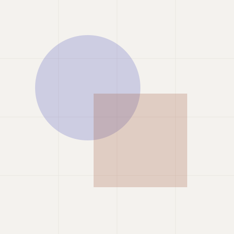

Content
Blocks for things people read
Editorial and data-presentation components. Two rules run through all of them: a picture of data is always accompanied by the data, and a caption is never the same thing as an alternative text.
Quote
A <figure> containing a
<blockquote> and a
<figcaption>. The attribution sits
outside the quotation, because it is not part of what was said.
“Art and technology — a new unity.”
Dessau takes its conceptual bearing from exactly this idea — design, craft, systems and production treated as one problem rather than four. Not from the visual language: there is no primary-colour geometry here, and no historical pastiche. The influence shows up as clarity, reduction and systems thinking.
Facts
A short list of figures supporting what the surrounding text claims. A description list, because each figure has a label.
- Components
- 38
- Patterns
- 11
- Contrast pairs verified
- 148
- Runtime dependencies
- 0
A description list, so each figure is programmatically paired with
its label. The number is visually above the label but second in the
DOM, because <dt> must precede
<dd>.
Call to action
One block, one action, named for what happens next rather than “Submit”.
Start a product with Dessau
One stylesheet, two scripts, no build step. Copy the consumer agent template into your repository and you are set up.
Download
Format and size are in the visible text, not in a
title. Someone on a metered connection
needs to know it is a 14 MB PDF before tapping it.
Key-value list
Labelled values in a description list, so the pairing is available to assistive technology and not merely visual.
- Reference
- 7K4M-92QX
- Submitted
- 1. August 2026, 14:30 Uhr
- Amount
- 1.234,56 €
- Share
- 19,5 %
- Status
- Approved
The term column is fit-content(40%): it takes what it needs up to two fifths of the container and wraps beyond that. As max-content it was as wide as its longest term, so one compound noun made the pair wider than a phone — and, through the grid track it sits in, the page with it.
German formats by default: comma as the decimal separator, point as
the thousands separator, 1. August 2026,
24-hour time with “Uhr”. Produced by
DDS.format over
Intl — see
agent/ux-writing.md for the English
variant.
Data list
The row-based alternative to a table, for when nothing is being compared down a column.
- Ilva Bergström
- Tomasz Wierzbicki
- Nadja Öztürk
Three buttons all called “Manage access” are three identical controls to a screen-reader user. In a real product each needs the person’s name in its accessible name.
Specifications
A yes/no feature list where the answer carries an icon and a word, never a colour alone.
Specifications
- Bauzeit
- 1925–1926
- Architekt
- Walter Gropius
- Bruttogeschossfläche
- 2.610 m²
- Geschosse
- 3 bis 5
- Konstruktion
- Stahlbetonskelett mit Vorhangfassade
- Denkmalstatus
- UNESCO-Welterbe seit 1996
Specifications or a key-value list?
Both are a <dl>. The difference is
what the reader is doing. A key-value list is for a handful of pairs
being read — a summary, a review step before submitting.
This is for a longer, homogeneous list someone is looking a value
up in, which is why every row is separated and the label is tied
to its value with a leader.
The leader is generated content, so it is not in the accessibility tree. A row of literal dots would be read out, one per dot.
Chip
A badge is read; a chip is operated. A chip that removes a filter names what it removes.
Chart
The rule is absolute: every chart is accompanied by the same
data as a real table. The table may be visually hidden, but
it must exist — it is the only representation that can be read
cell by cell, copied and translated. The bars are
aria-hidden.
| Project | Documents |
|---|---|
| Harbour | 1.204 |
| Cycle bridge | 471 |
| Paving survey | 47 |
| Consultation | 8 |
The label column is capped at a share of the row and wraps beyond it, for the same reason as the key-value list. The value keeps its natural width — it is a number, and a number that wraps is unreadable.
One grid, not one per row. The rows are
subgrid, so the widest label and the
longest number size a column that every row then shares. Measured per
row instead, four labels of four lengths give four different starting
points — and comparing lengths that do not share an origin is the one
thing the eye cannot do, which is the only thing a bar chart is for.
| Approved | 68 % |
|---|---|
| Not approved | 32 % |
A donut is only worth using for one value against a whole. For comparing categories, bars are read more accurately — angle is much harder to judge than length.
Progress ring
A single proportion drawn as a ring. The figure is decorative; the number beside it is the data.
Progress ring
In place, beside the thing it is about — which is the only reason to choose a ring over a bar:
- bebauungsplan-nord.pdf
- lageplan-2026.dwg
The circle communicates nothing on its own
The ring is aria-hidden, exactly like the
charts. A screen reader gets nothing from an angle, so the value has
to exist as text or on a real
<progress> — as in the second row
above. A ring with no textual value is a decoration that looks like
information.
Use a bar wherever one fits. This exists for the case where it does not: a table cell, a dense dashboard, beside a filename. It is drawn with a conic gradient and a radial mask, so it sits on any surface without needing an opaque inner circle matched to the background.
Figure
alt replaces the image for someone who
cannot see it; a caption is supplementary information everyone gets.
Repeating one as the other means the same sentence is announced twice.
Text-media
A block of text beside an image — the recurring content block of a CMS page. Three layouts above 40rem of container width; below it all three stack, and the media is on top.
Text and media, responsive by container query

The media is written first anyway
Wide, the image sits on the trailing edge and the text
reads from the leading one. Narrow, this block stacks
with the image on top — and it is on top because it is
first in the markup, not because
order put it there.
Take the width down to 375 and back. The only thing that moves is the column the image is placed in.
The same markup, one class apart
Wide, the image keeps the leading column — which is
where the source order already puts it. The rule is
written out regardless: the column a block means to be
in should not have to be derived from the position of a
<div>.
Narrow, it is indistinguishable from the variant before it. That is the intended result, not a coincidence.
One column at every width
The lead-image layout. It never becomes two columns, because half the width would be a smaller picture rather than a different one.
The text is capped at the reading measure instead. Full width is not a measure: at 1280 a paragraph would run past a hundred characters a line.
Drag the width buttons. Because the layout comes from
@container rather than
@media, the stage width is what the
component measures — which is also why it works correctly inside a
narrow panel or a dialog. The width survives switching layout, so
the three can be compared at the same one.
At 375: all three are the same layout — media, then text. The trailing variant included. A phone shows the illustration with its heading rather than four paragraphs later, and because the media element is first in the source, that is what a screen reader reads out too (WCAG 1.3.2).
Lightbox
The trigger is a real <a href> at
the full-size file. Without JavaScript the click simply opens the
image, so the enlargement is never load-bearing.
Gallery
A group of images sharing one lightbox, with arrows, keyboard navigation and the position announced.
Hover the image: the cursor becomes zoom-in,
the image scales slightly inside a frame that stays the same size, and a
magnifier badge appears. All three are scoped to
[data-dds-lightbox-ready], which the script
sets — with no JavaScript the link opens the full-size image in a new tab
and promises nothing it cannot deliver.
The badge itself is generated too, and “Show markup” does not offer it:
it carries data-dds-generated, which is how
anything a script inserts into authored markup stays out of the sample.
A component that builds an element so nobody has to type it, in a sample
that tells you to type it, is worse than no sample.
Consent embed
A third-party frame contacts that provider — and can set cookies and log an IP address — the moment the page loads, before the visitor has agreed to anything. Deferring the load until a deliberate click means no request leaves the page unasked.
youtube-nocookie.com is used rather
than youtube.com: it is the
privacy-preserving embed host, and there is no reason to prefer the
other one. autoplay is deliberately
not in the allow list.
.dds-embed-portrait: a social post is
not 16:9, and it takes a fixed height rather than an
aspect ratio. The provider’s own frame renders at a fixed intrinsic
height — header, image, action bar, caption — so a ratio box makes it
grow its own browser scrollbar inside ours, which we can neither
style nor remove.
A map embed needs the address in real text beside it, not only inside the frame. The frame is an image to a screen reader, and it does not load at all until consent is given — so the address has to be readable either way.
Do
- Name the provider and say what loading it means.
- Always offer a plain link to the content on the provider’s site.
- Give the
<iframe>atitle. - Move focus into the frame once it loads — the button is gone.
Don’t
- Remember the consent as a component side effect.
- Include
autoplayinallow. - Ship the
<iframe>in the markup and hide it with CSS — it still loads. - Treat this as a substitute for a real consent record.
Media
Transcript — Example audio track
[00:00] This recording is four seconds of silence. It exists so the player has something to play, and so this transcript has something to transcribe.
[00:04] End of recording.
Native controls: keyboard operable, screen-reader accessible, and
they honour the platform’s own accessibility settings. Video with
speech additionally requires a
<track kind="captions"> — that is
WCAG 1.2.2, not a nice-to-have.
The transcript is required, not recommended (WCAG
2.2 1.2.1). Audio-only content without one is unusable for a deaf
user and unfindable for everyone — a search engine and a page search
both read text, and neither reads a waveform. It is the most commonly
skipped requirement in the standard, because the work is producing
the transcript rather than writing the markup, so
check-reference.mjs fails on a
<video> or
<audio> with no
[data-dds-transcript] beside it.
Avatar
A person, as an image or their initials. Decorative beside their name, and never the only way a person is identified.
Initials are aria-hidden. “IB” read
aloud tells nobody anything — the name belongs in real text beside
the avatar or in a visually hidden span.
Byline
Who wrote it and when, compact, for the top of an article.
Byline — compact, for the top of an article
Byline — boxed, for the end of one
“Email” is not a link name
A screen-reader user can list every link on a page and hear them out of context. In that list, “Email” appears with no indication of whose — and on an article with three contributors, three identical entries. The name goes in the link text: “E-Mail an Ilva Bergström”.
The date is a <time> with a machine
-readable datetime. The visible form is
written for the reader's locale; the attribute is what a machine reads,
and the two do not have to look alike.